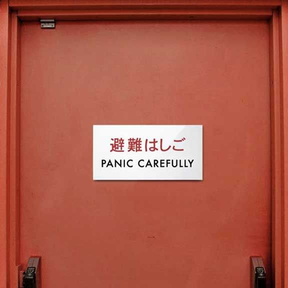

What is mistranslation
: a mistake in translating
: an incorrect translation
Why should we care about mistranslation
Using a subpar translation service and lead to a variety of problems, whether it´s incorrectly reported news, negative ad campaigns, or mistranslated signs and packaging. While translation isn´t a guessing game, mistranslations do often leave us guessing about a message´s original intent.
“Mistranslation.” Merriam-Webster.com Dictionary, Merriam-Webster, https://www.merriam-webster.com/dictionary/mistranslation. Accessed 18 Mar. 2021.